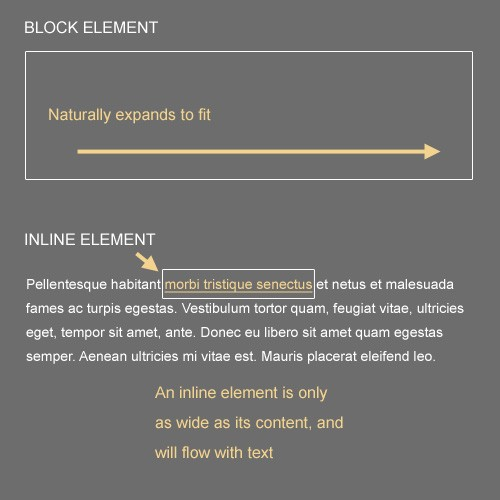
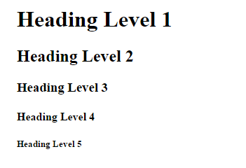
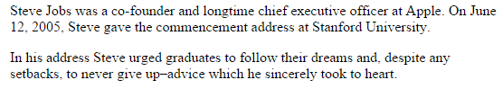
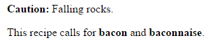
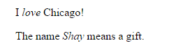
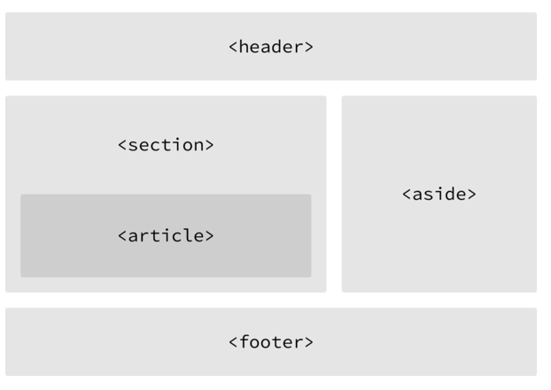
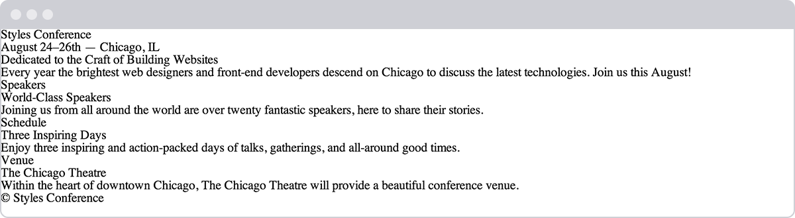
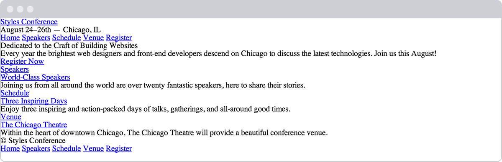

Intro to HTML
Table of Contents
- 1. Getting to Know HTML
- 2. Semantics Overview
- 3. Identifying Divisions & Spans
- 4. Using Text-Based Elements
- 5. Building Structure
- 6. Header
- 7. Navigation
- 8. Article
- 9. Section
- 10. Deciding Between <article>, <section>, or <div> Elements
- 11. Aside
- 12. Footer
- 13. In Practice
- 14. Encoding Special Characters
- 15. Creating Hyperlinks
- 16. In Practice
- 17. Summary
1 Getting to Know HTML
With our introduction to HTML and CSS complete, it's time to dig a little deeper into HTML and examine the different components that make up this language.
In order to start building websites, we need to learn a little about which HTML elements are best used to display different types of content. It's also important to understand how elements are visually displayed on a web page, as well as what different elements mean semantically.
Using the proper element for the job goes a long way, and we'll want to make well-informed decisions in the process.
2 Semantics Overview
So what exactly are semantics? Semantics within HTML is the practice of giving content on the page meaning and structure by using the proper element. Semantic code describes the value of content on a page, regardless of the style or appearance of that content. There are several benefits to using semantic elements, including enabling computers, screen readers, search engines, and other devices to adequately read and understand the content on a web page. Additionally, semantic HTML is easier to manage and work with, as it shows clearly what each piece of content is about.
Moving forward, as new elements are introduced, we'll talk about what those elements actually mean and the type of content they best represent. Before we do that, though, let's look at two elements <div> and <span> that actually don't hold any semantic value. They exist for styling purposes only.
3 Identifying Divisions & Spans
Divisions, or <div>, and <span> are HTML elements that act as containers solely for styling purposes. As generic containers, they do not come with any overarching meaning or semantic value. Paragraphs are semantic in that content wrapped within a <p> element is known and understood as a paragraph. <div> and <span> do not hold any such meaning and are simply containers.
3.1 Block vs. Inline Elements
Most elements are either block- or inline-level elements. What's the difference?
Block-level elements begin on a new line, stacking one on top of the other, and occupy any available width. Block-level elements may be nested inside one another and may wrap inline-level elements. We'll most commonly see block-level elements used for larger pieces of content, such as paragraphs.
Inline-level elements do not begin on a new line. They fall into the normal flow of a document, lining up one after the other, and only maintain the width of their content. Inline-level elements may be nested inside one another; however, they cannot wrap block-level elements. We'll usually see inline-level elements with smaller pieces of content, such as a few words. 
3.2 Div or span
Both <div> and <span>, however, are extremely valuable when building a website in that they give us the ability to apply targeted styles to a contained set of content.
A <div> is a block-level element that is commonly used to identify large groupings of content, and which helps to build a web page’s layout and design. A <span>, on the other hand, is an inline-level element commonly used to identify smaller groupings of text within a block-level element.
We’ll commonly see <div> and <span> with class or id attributes for styling purposes. Choosing a class or id attribute value, or name, requires a bit of care. We want to choose a value that refers to the content of an element, not necessarily the appearance of an element.
For example, if we have a <div> with an orange background that contains social media links, our first thought might be to give the <div> a class value of orange. What happens if that orange background is later changed to blue? Having a class value of orange no longer makes sense. A more sensible choice for a class value would be social, as it pertains to the contents of the <div>, not the style.
<!-- Division --> <div class="social"> <p>I may be found on...</p> <p>Additionally, I have a profile on...</p> </div> <!-- Span --> <p>Soon we'll be <span class="tooltip">writing HTML</span> with the best of them.</p>
3.3 Comments within HTML & CSS
The previous code includes exclamation points within the HTML, and that's all right. Those are not elements, those are comments.
HTML and CSS give us the ability to leave comments within our code, and any content wrapped within a comment will not be displayed on the web page. Comments help keep our files organized, allow us to set reminders, and provide a way for us to more effectively manage our code. Comments become especially useful when there are multiple people working on the same files.
HTML comments start with <!-- and end with -->. CSS comments start with /* and end with */.
4 Using Text-Based Elements
Many different forms of media and content exist online; however, text is predominant. Accordingly, there are a number of different elements for displaying text on a web page. For now we'll focus on the more popular elements, including headings, paragraphs, bold text to show importance, and italics for emphasis. Later, we'll take a closer look at how to style text.
4.1 Headings
Headings are block-level elements, and they come in six different rankings, <h1> through <h6>. Headings help to quickly break up content and establish hierarchy, and they are key identifiers for users reading a page. They also help search engines to index and determine the content on a page.
Headings should be used in an order that is relevant to the content of a page. The primary heading of a page or section should be marked up with an <h1> element, and subsequent headings should use <h2>, <h3>, <h4>, <h5>, and <h6> elements as necessary.
Each heading level should be used where it is semantically valued, and should not be used to make text bold or big, there are other, better ways to do that.
Here is an example of HTML for all the different heading levels and the resulting display on a web page.
<h1>Heading Level 1</h1> <h2>Heading Level 2</h2> <h3>Heading Level 3</h3> <h4>Heading Level 4</h4> <h5>Heading Level 5</h5> <h6>Heading Level 6</h6>
body, h6 { margin: 0;}
h1 { margin-top: 0;}
Result:

Figure 1: Headings demo
4.2 Paragraphs
Headings are often followed by supporting paragraphs. Paragraphs are defined using the <p> block-level element. Paragraphs can appear one after the other, adding information to a page as desired. Here is example of how to set up paragraphs.
<p>Steve Jobs was a co-founder and longtime chief executive officer at Apple. On June 12, 2005, Steve gave the commencement address at Stanford University.</p> <p>In his address Steve urged graduates to follow their dreams and, despite any setbacks, to never give up–advice which he sincerely took to heart.</p>
4.2.1 Paragraphs Demo
<p>Steve Jobs was a co-founder and longtime chief executive officer at Apple. On June 12, 2005, Steve gave the commencement address at Stanford University.</p> <p>In his address Steve urged graduates to follow their dreams and, despite any setbacks, to never give up–advice which he sincerely took to heart.</p>
body { margin: 0;}p:first-of-type { margin-top: 0;}p:last-of-type { margin-bottom: 0;}
Result:

Figure 2: Paragraphs demo
4.3 Bold Text with Strong
To make text bold and place a strong importance on it, we'll use the <strong> inline-level element. There are two elements that will bold text for us: the <strong> and <b> elements. It is important to understand the semantic difference between the two.
The <strong> element is semantically used to give strong importance to text, and is thus the most popular option for bolding text. The <b> element, on the other hand, semantically means to stylistically offset text, which isn't always the best choice for text deserving prominent attention. We have to gauge the significance of the text we wish to set as bold and to choose an element accordingly.
Here are the two HTML options for creating bold text in action:
<!-- Strong importance --> <p><strong>Caution:</strong> Falling rocks.</p> <!-- Stylistically offset --> <p>This recipe calls for <b>bacon</b> and <b>baconnaise</b>.</p>
4.3.1 Bold Text with Strong Demo
<!-- Strong importance --><p><strong>Caution:</strong> Falling rocks.</p> <!-- Stylistically offset --><p>This recipe calls for <b>bacon</b> and <b>baconnaise</b>.</p>
body { margin: 0;}p:first-of-type { margin-top: 0;}p:last-of-type { margin-bottom: 0;}
Result:

Figure 3: Bold text demo
4.4 Italicize Text with Emphasis
To italicize text, thereby placing emphasis on it, we'll use the <em> inline-level element. As with the elements for bold text, there are two different elements that will italicize text, each with a slightly different semantic meaning.
The <em> element is used semantically to place a stressed emphasis on text; it is thus the most popular option for italicizing text. The other option, the <i> element, is used semantically to convey text in an alternative voice or tone, almost as if it were placed in quotation marks. Again, we will need to gauge the significance of the text we want to italicize and choose an element accordingly.
Here’s the HTML code for italicizing:
<!-- Stressed emphasis --> <p>I <em>love</em> Chicago!</p> <!-- Alternative voice or tone --> <p>The name <i>Shay</i> means a gift.</p>
4.4.1 Italicize Text with Emphasis Demo
<!-- Stressed emphasis --><p>I <em>love</em> Chicago!</p> <!-- Alternative voice or tone --><p>The name <i>Shay</i> means a gift.</p>
body {
margin: 0;
}
p:first-of-type {
margin-top: 0;
}
p:last-of-type {
margin-bottom: 0;
}
Result:

Figure 4: Italicize demo
These text-level elements are quite handy for bringing our content to life. In addition to these, there are structurally based elements. Whereas text-based elements identify headings and paragraphs, structural elements identify groupings of content such as headers, articles, footers, and so forth. Let's take a look.
5 Building Structure
For the longest time the structure of a web page was built using divisions. The problem was that divisions provide no semantic value, and it was fairly difficult to determine the intention of these divisions. Fortunately HTML5 introduced new structurally based elements, including the <header>, <nav>, <article>, <section>, <aside>, and <footer> elements.
All of these new elements are intended to give meaning to the organization of our pages and improve our structural semantics. They are all block-level elements and do not have any implied position or style. Additionally, all of these elements may be used multiple times per page, so long as each use reflects the proper semantic meaning.
Let’s roll up our sleeves and take a closer look.

Figure 5: One possible example of HTML5 structural elements giving meaning to the organization of our pages
6 Header
The <header> element, like it sounds, is used to identify the top of a page, article, section, or other segment of a page. In general, the <header> element may include a heading, introductory text, and even navigation.
<header>...</header>
6.1 <header> vs. <head> vs. <h1> through <h6> Elements
It is easy to confuse the <header> element with the <head> element or the heading elements, <h1> through <h6>. They all have different semantic meanings and should be used according to their meanings.
- The
<header>element is a structural element that outlines the heading of a segment of a page. It falls within the<body>element. - The
<head>element is not displayed on a page and is used to outline metadata, including the document title, and links to external files. It falls directly within the<html>element. - Heading elements,
<h1>through<h6>, are used to designate multiple levels of text headings throughout a page.
7 Navigation
The <nav> element identifies a section of major navigational links on a page. The <nav> element should be reserved for primary navigation sections only, such as global navigation, a table of contents, previous/next links, or other noteworthy groups of navigational links.
Most commonly, links included within the <nav> element will link to other pages within the same website or to parts of the same web page. Miscellaneous one-off links should not be wrapped within the <nav> element; they should use the anchor element, <a>, and the anchor element alone.
<nav>...</nav>
8 Article
The <article> element is used to identify a section of independent, self-contained content that may be independently distributed or reused. We'll often use the <article> element to mark up blog posts, newspaper articles, user-submitted content, and the like.
When deciding whether to use the <article> element, we must determine if the content within the element could be replicated elsewhere without any confusion. If the content within the <article> element were removed from the context of the page and placed, for example, within an email or printed work, that content should still make sense.
<article>...</article>
9 Section
The <section> element is used to identify a thematic grouping of content, which generally, but not always, includes a heading. The grouping of content within the <section> element may be generic in nature, but it's useful to identify all of the content as related.
The <section> element is commonly used to break up and provide hierarchy to a page.
<section>...</section>
10 Deciding Between <article>, <section>, or <div> Elements
At times it becomes fairly difficult to decide which element – <article>, <section>, or <div> – is the best element for the job based on its semantic meaning. The trick here, as with every semantic decision, is to look at the content.
Both the <article> and <section> elements contribute to a document's structure and help to outline a document. If the content is being grouped solely for styling purposes and doesn't provide value to the outline of a document, use the <div> element.
If the content adds to the document outline and it can be independently redistributed or syndicated, use the <article> element.
If the content adds to the document outline and represents a thematic group of content, use the <section> element.
11 Aside
The <aside> element holds content, such as sidebars, inserts, or brief explanations, that is tangentially related to the content surrounding it. When used within an <article> element, for example, the <aside> element may identify content related to the author of the article.
We may instinctively think of an <aside> element as an element that appears off to the left or right side of a page. We have to remember, though, that all of the structural elements, including the <aside> element, are block-level elements and as such will appear on a new line, occupying the full available width of the page or of the element they are nested within, also known as their parent element.
<aside>...</aside>
12 Footer
The <footer> element identifies the closing or end of a page, article, section, or other segment of a page. Generally the <footer> element is found at the bottom of its parent. Content within the <footer> element should be relative information and should not diverge from the document or section it is included within.
<footer>...</footer>
13 In Practice
Currently, our Styles Conference website lacks real structure–and content for that matter. Let's take some time to flesh out our home page a bit.
Using our existing
index.htmlfile, let's add in a<header>element. Our<header>element should include our existing<h1>element; let's also add an<h3>element as a tagline to support our<h1>element.<header> <h1>Styles Conference</h1> <h3>August 24–26th — Chicago, IL</h3> </header>
After our
<header>element, let's add a new group of content, using the<section>element, that introduces our conference. We'll begin this section with a new<h2>element and end it with our existing paragraph.<section> <h2>Dedicated to the Craft of Building Websites</h2> <p>Every year the brightest web designers and front-end developers descend on Chicago to discuss the latest technologies. Join us this August!</p> </section>
Following the introduction to our conference, let's add another group of content that teases a few of the pages we'll be adding, specifically the Speakers, Schedule, and Venue pages. Each of the pages we're teasing should also reside within its own section and include supporting text. We'll group all of the teasers inside a
<section>element, and each individual teaser will be wrapped within a<section>element as well. In all, we'll have three<section>elements inside another<section>element, which is all right.<section> <section> <h5>Speakers</h5> <h3>World-Class Speakers</h3> <p>Joining us from all around the world are over twenty fantastic speakers, here to share their stories.</p> </section> ... </section>
Lastly, let's add our copyright within the
<footer>element at the end of our page. To do so let's use the<small>element, which semantically represents side comments and small print–perfect for our copyright.Generally, content within the <small> element will be rendered as, well, small, but our CSS reset will prevent that from happening.
<footer> <small>© Styles Conference</small> </footer>
Now we can see our home page beginning to come to life.

Figure 6: Our home page after adding more content and structure
14 Encoding Special Characters
The <h3> element within our <header> element, as well as the <small> element within our <footer> element, has some interesting things going on. Specifically, a few special characters within these elements are being encoded.
Special characters include various punctuation marks, accented letters, and symbols. When typed directly into HTML, they can be misunderstood or mistaken for the wrong character; thus they need to be encoded.
Each encoded character will begin with an ampersand, &, and end with a semicolon, ;. What falls between the ampersand and semicolon is a character's unique encoding, be it a name or numeric encoding.
For example, we would encode the word "resumé" as resumé. Within our header we have encoded both en and em dashes, and within our footer we have encoded the copyright symbol. For reference, a long list of character encodings may be found at Copy Paste Character.
15 Creating Hyperlinks
Along with text, one of the core components of the Internet is the hyperlink, which provides the ability to link from one web page or resource to another. Hyperlinks are established using the anchor, <a>, inline-level element. In order to create a link from one page (or resource) to another, the href attribute, known as a hyperlink reference, is required. The href attribute value identifies the destination of the link.
For example, clicking the text Finki, which is wrapped inside the anchor element with the href attribute value of http://finki.ukim.mk, will take users to Finki's website.
<footer> <a href="http://finki.ukim.mk">Finki</a> </footer>
15.1 Wrapping Block-Level Elements with Anchors
By nature the anchor element, <a>, is an inline element, and, according to web standards, inline-level elements may not wrap block-level elements. With the introduction of HTML5, however, anchor elements specifically have permission to wrap either block-, inline-, or any other level elements. This is a break from the standard convention, but it’s permissible in order to enable entire blocks of content on a page to become links.
15.2 Relative & Absolute Paths
The two most common types of links are links to other pages of the same website and links to other websites. These links are identified by their href attribute values, also known as their paths.
Links pointing to other pages of the same website will have a relative path, which does not include the domain (.com, .org, .edu, etc.) in the href attribute value. Because the link is pointing to another page on the same website, the href attribute value needs to include only the filename of the page being linked to: about.html, for example.
Should the page being linked to reside within a different directory, or folder, the href attribute value needs to reflect this as well. Say the about.html page resides within the pages directory; the relative path would then be pages/about.html.
Linking to other websites outside of the current one requires an absolute path, where the href attribute value must include the full domain. A link to Google would need the href attribute value of http://google.com, starting with http and including the domain, .com in this case.
Here clicking on the text "About" will open the about.html page inside our browser. Clicking the text "Google," on the other hand, will open http://google.com/ within our browser.
<!-- Relative Path --> <a href="about.html">About</a> <!-- Absolute Path --> <a href="http://www.google.com/">Google</a>
15.3 Linking to an Email Address
Occasionally we may want to create a hyperlink to our email address – for example, hyperlink text that says "Email Me," which when clicked opens a user's default email client and pre-populates part of an email. At a minimum the email address to which the email is being sent is populated; other information such as a subject line and body text may also be included.
To create an email link, the href attribute value needs to start with mailto: followed by the email address to which the email should be sent. To create an email link to finki@finki.ukim.mk, for example, the href attribute value would be mailto:finki@finki.ukim.mk.
Additionally, subject, body text, and other information for the email may be populated. To add a subject line, we'll include the subject= parameter after the email address. The first parameter following the email address must begin with a question mark, ?, to bind it to the hyperlink path. Multiple words within a subject line require that spaces be encoded using %20.
Adding body text works in the same way as adding the subject, this time using the body= parameter in the href attribute value. Because we are binding one parameter to another we need to use the ampersand, &, to separate the two. As with the subject, spaces must be encoded using %20, and line breaks must be encoded using %0A.
Altogether, a link to finki@finki.ukim.mk with the subject of "Reaching Out" and body text of "How are you" would require an href attribute value of mailto:finki@finki.ukim.mk?subject=Reaching%20Out&body=How%20are%20you.
Here’s the full breakdown:
<a href="mailto:finki@finki.ukim.mk?subject=Reaching%20Out&body=How%20are%20you">Email Me</a>
15.4 Opening Links in a New Window
One feature available with hyperlinks is the ability to determine where a link opens when clicked. Typically, links open in the same window from which they are clicked; however, links may also be opened in new windows.
To trigger the action of opening a link in a new window, use the target attribute with a value of _blank. The target attribute determines exactly where the link will be displayed, and the _blank value specifies a new window.
To open http://finki.ukim.mk/ in a new window, the code would look like this:
<a href="http://finki.ukim.mk" target="_blank">Finki</a>
15.5 Linking to Parts of the Same Page
Periodically we'll see hyperlinks that link to part of the same page the link appears on. A common example of these same-page links are "Back to top" links that return a user to the top of a page.
We can create an on-page link by first setting an id attribute on the element we wish to link to, then using the value of that id attribute within an anchor element's href attribute.
Using the "Back to top" link as an example, we can place an id attribute value of top on the <body> element. Now we can create an anchor element with an href attribute value of #top, pound sign and all, to link to the beginning of the <body> element.
Our code for this same-page link would look like the following:
<body id="top"> ... <a href="#top">Back to top</a> ... </body>
Hyperlinks are incredibly useful and have revolutionized how we use the Internet. So far we've covered how to link to other pages or websites, as well as how to create email links and links to parts of the same page. Before we go any further, let's create some links of our own.
16 In Practice
It's time to take Styles Conference from a single-page website to a full-blown website with multiple pages, all of which will be linked together using hyperlinks.
- We' begin by making our "Styles Conference" text inside the
<h1>element within our<header>element link to theindex.htmlpage. Because we are already on theindex.htmlpage, this may seem a little odd – and rightfully so – but as the header is replicated on other pages, linking back to the home page will make sense.
<h1> <a href="index.html">Styles Conference</a> </h1>
In order to navigate across all of the different pages, we're going add in a navigation menu, using the
<nav>element, within our<header>element. We'll be creating Speakers, Schedule, Venue, and Register pages to go with our home page, so we should create links for all of them.<header> ... <nav> <a href="index.html">Home</a> <a href="speakers.html">Speakers</a> <a href="schedule.html">Schedule</a> <a href="venue.html">Venue</a> <a href="register.html">Register</a> </nav> </header>
Let's also add the same navigation menu from our
<header>element to our<footer>element for convenience.<footer> ... <nav> <a href="index.html">Home</a> <a href="speakers.html">Speakers</a> <a href="schedule.html">Schedule</a> <a href="venue.html">Venue</a> <a href="register.html">Register</a> </nav> </footer>
Within the
<section>element that introduces our conference, just below our header, we should also include a link to register for the conference. Placing a link below the paragraph will work perfectly.<section> ... <a href="register.html">Register Now</a> </section>
We can't forget to add links to all of the sections teasing our other pages. Inside each section, let's wrap both the
<h3>and<h5>elements within an anchor element linking to the proper page. We'll want to make sure we do this for every section accordingly.<section> <section> <a href="speakers.html"> <h5>Speakers</h5> <h3>World-Class Speakers</h3> </a> <p>Joining us from all around the world are over twenty fantastic speakers, here to share their stories.</p> </section> ... </section>
- Now we need to create a handful of new pages. Let's create
speakers.html,schedule.html,venue.html, andregister.htmlfiles. These files should live within the same folder as theindex.htmlfile, and, because we're keeping them inside the same folder, all of our links should work as expected. To ensure that all of our pages look the same, let's make sure that all of these new files have the same document structure and<header>and<footer>elements as theindex.htmlfile.
It’s official, we’re no longer working with a single page but indeed a full website.

Figure 7: Our home page after all of the different links and navigation have been added
17 Summary
Semantics, as discussed within this lesson, are essential for providing our HTML with structure and meaning. Moving forward we’ll periodically introduce new elements, all of which will come with their own semantic meaning. It is the meaning of all of these elements that will provide our content with the most value.
Once again, in this lesson we covered the following:
- What semantics are and why they are important
- <div>s and <spans>s, and the difference between block- and inline-level elements
- Which text-based elements best represent the content of a page
- The HTML5 structural elements and how to define the structure and organization of our content and page
- How to use hyperlinks to navigate between web pages or websites
Hopefully you're starting to feel pretty good about HTML. There is still quite a bit to learn, but the foundation is in place. Next up, we’ll take a deeper look into CSS.